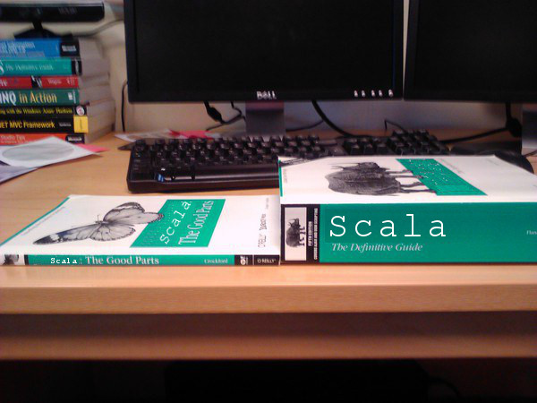
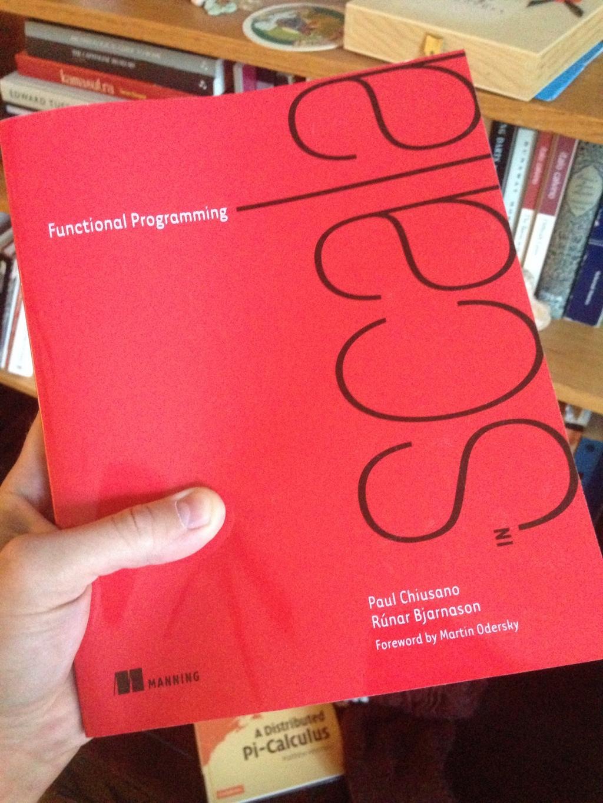
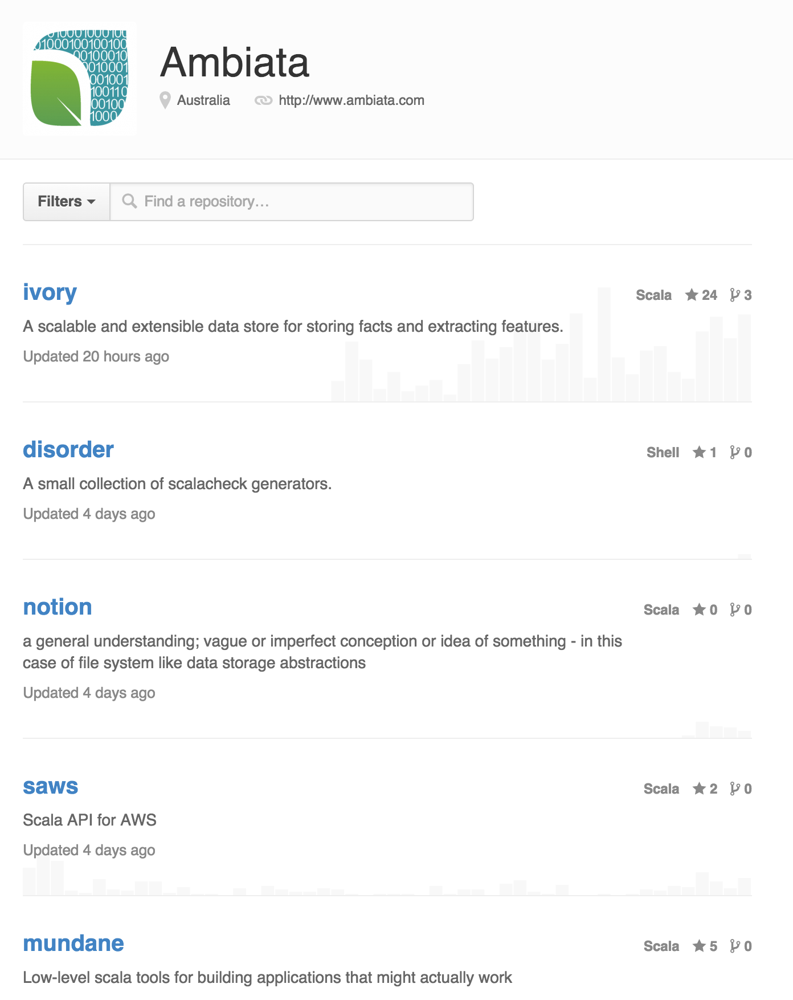
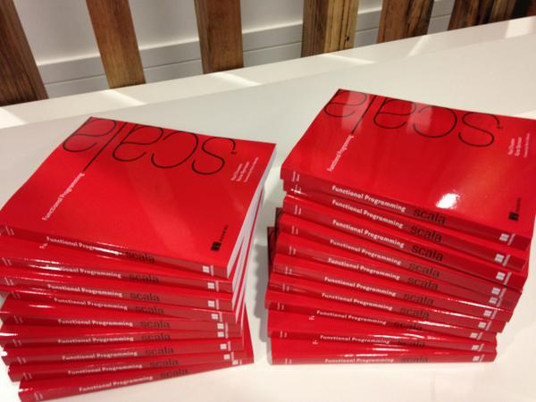

name: looper layout: true class: looper --- name: image layout: true class: center, middle, image --- name: image-white layout: true class: center, middle, image, image-white --- name: image-last layout: true class: center, middle, image, image-last --- name: ambiata layout: true class: ambiata --- name: ambiata-full layout: true class: center, middle, ambiata-full --- name: code-small layout: true class: code-small --- name: question layout: true class: center, middle, question --- name: rule layout: true class: center, middle, rule --- name: inverse layout: true class: center, middle, inverse --- class: center, middle template: image  # Scala, The Good Parts --- template: image <a href="http://www.manning.com/bjarnason/">  </a> # Scala, The Good Parts --- template: ambiata-full # How We Do Shit At Ambiata <br/> <br/> <br/> <br/> <br/> <br/> ## (To Stay Sane) --- template: image # Guidelines --- template: inverse # Default arguments --- layout: false ## Java Land ```java public class String { public byte[] getBytes() { return getBytes(Charset.defaultCharset()); } public byte[] getBytes(Charset charset) { ... } } ``` --- ## Scala to the rescue ```scala import scala.io._ def getBytes(string: String, codec: Codec = Codec.defaultCharsetCodec ): Array[Byte] = string.getBytes(codec.charSet) ``` --- template: question # Not so fast... --- ## Scala to the rescue ```scala import scala.io._ object SomewhereElse { def whatNow(s: String, codec: Codec = ???): Array[Byte] = getBytes(s.toUpperCase, codec) } object OuterRim { def farOut(s: String, codec: Codec = ???): Array[Byte] = SomewhereElse.whatNow(s.substring(1), codec) } ``` --- ## Ask yourself - What do you do about wanting to re-use the default? - Will someone get a compiler error if you add one? - How easy is it to forget? --- template: looper --- template: question # At Ambiata we have this crazy technique called... --- template: question # ...function arguments --- ## Crazy talk ```scala import scala.io._ def getBytes(string: String, codec: Codec): Array[Byte] = string.getBytes(codec.charSet) object SomewhereElse { def whatNow(s: String, codec: Codec): Array[Byte] = getBytes(s.toUpperCase, codec) } ``` --- template: rule # Rule 1: Thinking about code is important --- template: ambiata ## Ambiata - Default arguments are bugs waiting to happen - [github.com/ambiata/ivory/commit/ 934b63a30c62bd7ff019027858dbcf4493f0a338](https://github.com/ambiata/ivory/commit/934b63a30c62bd7ff019027858dbcf4493f0a338) - Cost us "a bazillion dollars" - We have a rule about _no_ default arguments - Pass everything explicitly --- ## More - Interesting discussion - "Default arguments are insane" - https://github.com/typelevel/wartremover/issues/116 - Bugs in the wild - https://issues.scala-lang.org/browse/SI-3322 --- template: inverse # Implicit configuration --- layout: false ## Looks familar? ```scala object Encoder { def getBytes(s: String) (implicit codec: Codec): Array[Byte] = s.getBytes(codec.charSet) } ``` --- ## Example ```scala import scala.io._ object Example { implicit val codec = Codec.UTF8 ... def doSomething: Array[Byte] = Encoder.getBytes("hello 草") } ``` --- ## Can you move code? - Move the function from A to B - Does it have the same behaviour/meaning? - And would you notice while refactoring? --- ## Example ```scala import scala.io._ object Example2 { def doSomething: Array[Byte] = Encoder.getBytes("hello 草") } ``` --- template: looper --- ## Funny story - I actually got a bug trying to write that example - Implicit scoping rules, picked up wrong encoding :/ --- template: rule # Rule 2: Moving code should not break silently --- ## Implicit resources ```scala def run(s: String)(implicit ec: ExecutionContext) = ... object Pool { implicit val tc: ExecutionContext = ExecutionContext.fromExecutor( Executors.newCachedThreadPool() ) } import Pool._ object Main { def main(args: Array[String]): Unit = { run("hello") // Will this program terminate? } } ``` --- ## Implicit resources - Who is responsible for closing/cleaning-up resources? - http://stackoverflow.com/questions/25879496/how-to-exit-a-program-properly-when-using-scalaz-futures-and-the-timed-function - Examples in the wild: - Akka has a context object - Slick has DB connections --- ## More crazy talk ```scala def run(s: String, ec: ExecutionContext) = ... object Main { def args(args: Array[String]): Unit = { // How do we get an ExecutionContext here? run("hello", ???) } object Pool { def runWith[A](f: ExecutionContext => A): A = { ... } } } ``` --- template: ambiata ## Ambiata - Pass arguments manually - Crazy! - But no accidental bugs!!! - Use Reader Monad - Just function composition - Talk for another day --- template: inverse # Pattern Matching --- layout: false ## ADTs FTW ```scala sealed trait Encoding case object StringEncoding extends Encoding case object IntEncoding extends Encoding ``` ```scala def asString(encoding: Encoding): String = encoding match { case StringEncoding => "string" case IntEncoding => "int" } ``` --- template: question ## So far so good --- ## Until... ```scala case object DateEncoding extends Encoding ``` ```scala > asString(DateEncoding) scala.matchError: DateEncoding at .asString() ``` --- template: looper --- template: code-small ## Warnings are useless ``` [warn] .../src/main/scala/PatternMatching.scala:8: match may not be exhaustive. [warn] It would fail on the following input: DateEncoding [warn] def asString(encoding: Encoding): String = encoding match { [warn] ^ [warn] ``` --- ## Warnings as errors ```scala scalacOptions in Compile ++= Seq("-Xfatal-warnings") ``` --- template: code-small ## Phew ``` [error] .../src/main/scala/PatternMatching.scala:8: match may not be exhaustive. [error] It would fail on the following input: DateEncoding [error] def asString(encoding: Encoding): String = encoding match { [error] ^ [error] ``` --- ## Wildcards are bad too ```scala def asString(encoding: Encoding): String = encoding match { case StringEncoding => "string" case _ => "int" } ``` ``` > asString(DateEncoding) res0: String = int ``` --- ## Exhaustive checking in Scala is not perfect ```scala def asString(encoding: Encoding): String = encoding match { case StringEncoding if ... => "string" } ``` ``` > asString(DateEncoding) scala.MatchError: DateEncoding (of class PatternMatching$DateEncoding$) at PatternMatching$.asString2(PatternMatching.scala:13) ``` --- ## Fold ```scala trait Encoding { def fold[A](s: => A, i: => A): A = this match { case StringEncoding => s case IntEncoding => i } } def asString(encoding: Encoding): String = encoding.fold("string", "int") ``` --- ## Fold ```scala trait Encoding { def fold[A](s: => A, i: => A, d: => A): A = this match { case StringEncoding => s case IntEncoding => i case DateEncoding => d } } def asString(encoding: Encoding): String = encoding.fold("string", "int", "date") ``` --- template: inverse # Value Discard --- layout: false ## Spot the bug ```scala def load(id: Int): IO[Dictionary] = ... def save(id: Int, dictionary: Dictionary): IO[Unit] = ... def setName(id: Int, name: String): IO[Unit] = load(id).map(dictionary => save(id, dictionary.copy(name = name)) ) ``` --- template: question ## Section 6.26.1 - Value Discard <i> If e has some value type and the expected type is Unit, <br/> e is converted to the expected type by embedding it in the term { e; () }. </i> --- ## What really happened ```scala def setName(id: Int, name: String): IO[Unit] = load(id).map(dictionary => save(id, dictionary.copy(name = name)) () ) ``` --- ## Whoops ```scala def setName(id: Int, name: String): IO[IO[Unit]] = load(id).map(dictionary => save(id, dictionary.copy(name = name)) ) ``` --- template: looper --- ## Compiler flag ```scala scalacOptions in Compile ++= Seq( "-Ywarn-value-discard" ) ``` --- template: code-small ## Warning ``` [warn] .../src/main/scala/ValueDiscard.scala:18: discarded non-Unit value [warn] load(id).map(dictionary => save(id, dictionary.copy(name = name))) [warn] ^ ``` --- ## Errors FTW ```scala scalacOptions in Compile ++= Seq( "-Ywarn-value-discard" , "-Xfatal-warnings" ) ``` --- template: code-small ## Much better ``` [error] .../src/main/scala/ValueDiscard.scala:18: discarded non-Unit value [error] load(id).map(dictionary => save(id, dictionary.copy(name = name))) [error] ^ ``` --- ## Fixed ```scala def setName(id: String, name: String): IO[Unit] = load(id).flatMap(dictionary => save(id, dictionary.copy(name = name)) ) ``` --- ## Burned in Real Life - [github.com/ambiata/mundane/commit/ 25ec5a32b952f1e8ce4f0516a3c52e4520ae05d5](https://github.com/ambiata/mundane/commit/25ec5a32b952f1e8ce4f0516a3c52e4520ae05d5) --- template: inverse # Type-Safe Equals --- ## Wat ```scala def foo: String = "1" def bar: Int = 1 scala> foo == bar res0: Boolean = false ``` --- template: question ## Why the f**k does that even compile? --- ## Scalaz FTW ```scala import scalaz._, Scalaz._ def foo: String = "1" def bar: Int = 1 // Doesn't compile // foo === bar ``` --- ## Another example ```scala trait Seq[A] { def contains(elem: Any): Boolean = ... } scala> List("1").contains(1) res0: Boolean = false ``` --- ## Discussion - [groups.google.com/forum/ #!msg/scalaz/0kx8U2F82wE/wEYXVWKWozEJ](https://groups.google.com/forum/#!msg/scalaz/0kx8U2F82wE/wEYXVWKWozEJ) --- template: inverse # Return Types --- ## What is the return type? ```scala def foo(strings: List[String]) = for { s <- strings } yield bar(s) > foo(List("a", "b", "c")).size ``` --- template: question ## What happens if 'bar' changes? --- ## Always use return types ```scala def foo1(strings: List[String]): List[String] = for { s <- strings } yield bar1(s) def foo2(strings: List[String]): List[List[String]] = for { s <- strings } yield bar2(s) ``` --- template: looper --- template: rule # Rule 3: Changing semantics of function should give compiler errors --- template: ambiata # Ambiata - _Always_ have return types for top-level methods - No surprises - Easier to review --- template: inverse # Seq --- layout:false ## What is the runtime performance of this function? ```scala def foo[A](a: A, s: Seq[A]): Seq[A] = ... foo(1, (1 to 100).toList) ``` --- ## What about now? ```scala def prepend[A](a: A, s: Seq[A]): Seq[A] = s :+ a prepend(1, (1 to 100).toList) ``` --- ## What about NOW? ```scala def foo[A](s: Seq[A]): Int = s.size foo(Stream.continually(1)) ``` --- template: rule ## Rule 4: Abstraction should reduce possibilities, not add to them --- ## What is more "abstract"? ```scala def foo[A](s: Seq[A]): Seq[A] = ... def foo[A](l: List[A]): List[A] = ... ``` --- ## What is more "abstract"? ```scala def foo(s: Seq[Int]): Seq[Int] = ... def foo(l: List[Int]): List[Int] = ... def foo[F[_] : Functor](l : F[Int]): F[Int] = ... ``` --- template: ambiata # Ambiata - _Never_ use `Seq` - Honestly we mostly use `List` - Depends on requirements - Paul Phillips - http://www.youtube.com/watch?v=TS1lpKBMkgg --- template: inverse # Property-based testing --- layout:false ## ScalaCheck - ScalaCheck is the norm - Only a handful of "unit" tests - Has changed my life - So important it deserves its own talk - Declan is speaking next month - Do it. Seriously. - John Hughes - Testing the Hard Stuff and Staying Sane - http://www.youtube.com/watch?v=zi0rHwfiX1Q --- ## Teaser ```scala import org.specs2._ import org.scalacheck._ class MySpec extends Specification with ScalaCheck { def is = "List reverse" ! check { (a: String ) => a.reverse.reverse ==== a } } ``` --- template: image --- template: inverse # Dependency Management ---  --- ## Ambiata - We like small, self-contained modules - But, how often do we "release"? - 3.0.0, 3.0.1, 3.1.0 - How do you choose the version number? - What does it even mean? - Maven SNAPSHOTs are evil - Non-repeatable builds --- ## Promulgate - https://github.com/ambiata/promulgate ```scala addSbtPlugin("com.ambiata" % "promulgate" % "0.11.0-20141014013725-80c129f") import com.ambiata.promulgate.project.ProjectPlugin._ object build extends Build { lazy val core = Project( settings = promulgate.library( "com.ambiata.something", "ambiata-oss" ) ) } ``` --- ## Very simple idea - Release on _every_ build - Use the Git hash - `mundane-io-1.0.0-c5dab77.jar` - Easy to know/find what changed - Upload to S3 - Can be done in [insert build tool] --- template: code-small ## Conflict ``` <<< val mundane = Seq("com.ambiata" % "mundane-io" %% "1.0.0-c5dab77") === val mundane = Seq("com.ambiata" % "mundane-io" %% "1.0.0-db04e5e") >>> ``` - Which one do you keep? --- template: code-small ## Timestamp ``` <<< val mundane = Seq("com.ambiata" % "mundane-io" %% "1.0.0-20140322013124-c5dab77") === val mundane = Seq("com.ambiata" % "mundane-io" %% "1.0.0-20140422013124-db04e5e") >>> ``` --- ## Future - Definitely not ideal - Upgrading downstream dependencies and ensuring compatibility - [Annex](http://www.youtube.com/watch?v=JjYAnBhF2JU) --- template: inverse # Conclusion --- template: image # Scala's Dark Side --- layout: false # Conclusion - Correctness over convenience. Always. - Protect your future self! - https://github.com/charleso/scala-the-good-parts - http://charleso.github.com/scala-the-good-parts --- template: image-last <a href="http://www.manning.com/bjarnason/">  </a> # Read this. Seriously.